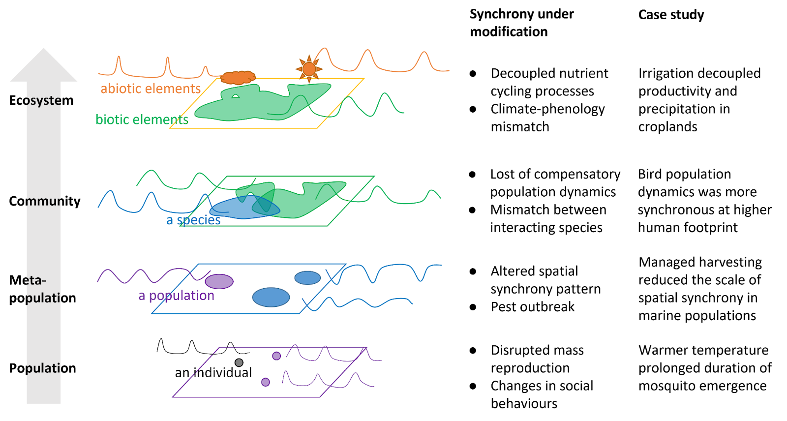

Human modifying synchrony across levels of organization

Schematic representation of various possible changes in ecological synchrony with climate change and human modifications.

Different aspects of ecological systems, biotic or abiotic, often fluctuate in coordinated patterns over space and time. Such high concordance between ecological processes is often referred to as ecological synchrony. Anthropogenic activities, including and beyond climate change, have the potential to alter ecological synchrony by disrupting or enhancing existing synchrony. Despite many local studies, we have a limited systematic understanding of how ecological synchrony is shaped by management in human-dominated landscapes at regional to continental scales. From a macrosystems perspective, we review how anthropogenic activities, particularly beyond climate change, alter ecological synchrony across levels of ecological organization, from the ecosystem level to the population level. For each level, we use a large-scale case study to demonstrate ways to quantify the impacts of human modifications on synchrony using big data from remote sensing, surveys, and observatory networks. For example, we detected possible homogenization of population dynamics of bird species in North America. These changes in ecological synchrony, although in different forms, often represent challenges to ecological and social systems. Collaborative research efforts that integrate emerging open data streams moving forward will be able to provide insights into the effects of different anthropogenic drivers and the consequences of changes in synchrony.